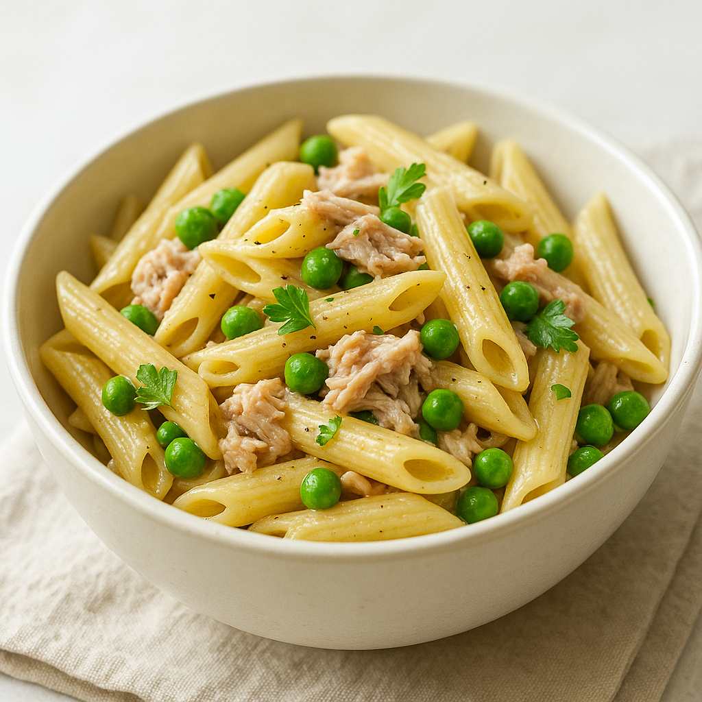

Tuna Pasta
Home

Description
This delicious and timeless recipe holds a place in every home, and is only a few ingredients and steps away from making.
Delicious Lasagne, only a few steps away! Let's begin, shall we!
Ingredients
For this special recipe we're going to need a few ingredients. Thankfully they're something that almost every household has, or at the very least you can remember the ingredients on one hand!
- 300g pasta (penne or fusilli)
- 1 can of tuna in oil or water
- 100g sweetcorn
- 4 tbsp mayonnaise
- Salt and pepper to taste
Steps
In this article, we will recreate it. Let's begin!
- Cook the pasta according to package instructions, then drain and cool slightly.
- Drain the tuna and flake it into a large bowl.
- Add the sweetcorn and mayonnaise to the tuna and mix well.
- Stir the cooked pasta into the tuna mixture until well combined.
- Season with salt and pepper, and serve warm or chilled.